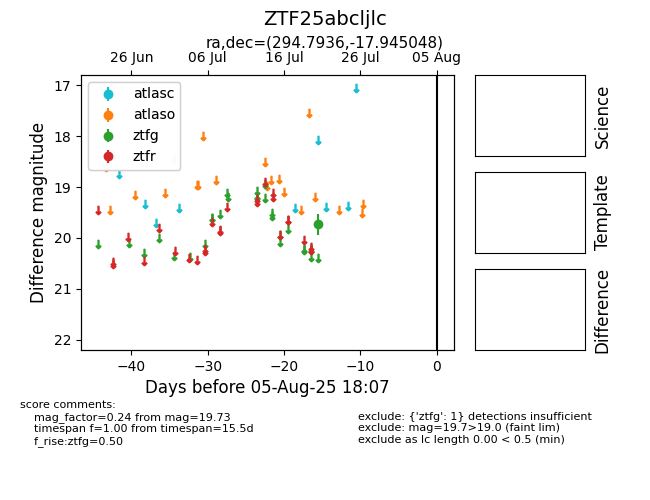

Target ZTF25abcljlc at 2025-08-05 18:07, see:
FINK: fink-portal.org/ZTF25abcljlc
Lasair: lasair-ztf.lsst.ac.uk/objects/ZTF25abcljlc
ALeRCE: alerce.online/object/ZTF25abcljlc
alt names
ZTF25abcljlc (ztf,fink)
coordinates:
equatorial (ra, dec) = (294.7936,-17.94505)
galactic (l, b) = (21.7199,-18.39557)
photometry
last ztfg=19.73
1 ztfg detections
